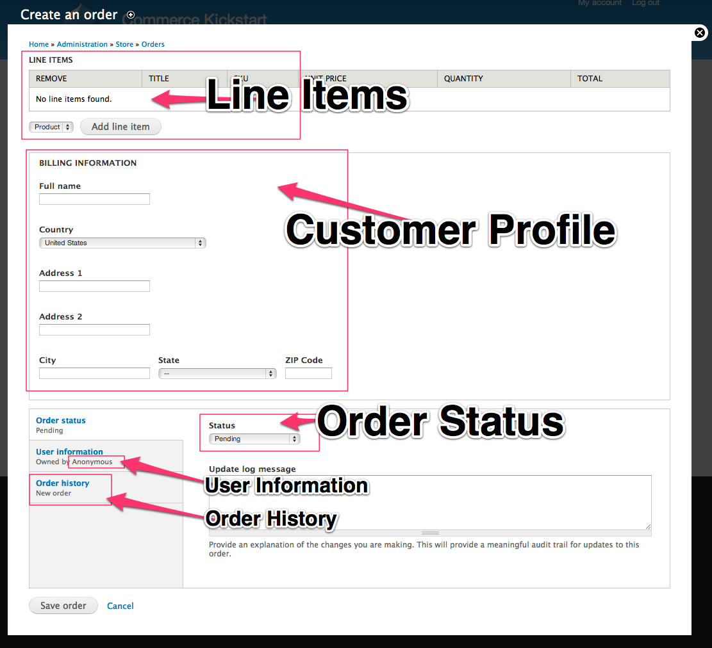

Creating Orders
Creating orders actually happens (seamlessly to the customer) when they create a shopping cart. A shopping cart is simply an order with a status of "Shopping Cart." To learn more about shopping carts visit these pages:

- Administration
- Store
- Orders
- Add/Edit Orders
Each Order can be created or edited using this administrative interface. The screenshot here is highlighting the following sections:
- Line Items: The line items are the products that are in the Shopping Cart. As you can see, you have the ability to add Products. If you click "Add line item" it will ask you for the SKU. Additionally, if you are using the Inline Entity Form module, it will let you choose variations like shirt size, color.
- Customer Profile: Customer Profile information is listed here in an easy-to-edit form. Note that this customer profile information, by default, is unique to each Order. There are several freely contributed modules that can add functionality to the customer profile checkout process.
- Order Status: Here is where you can manage the order status and change it to one of a number of different statuses, including canceled or other various options.
- User Information: You might be tempted to ignore this tab, but that would be a mistake. When adding or editing Orders make sure to check that the appropriate user is selected. By default, Drupal Commerce will create a user for an anonymous orders.
- Order History: This tab is very useful because it will list every order status change.
{kind=link}